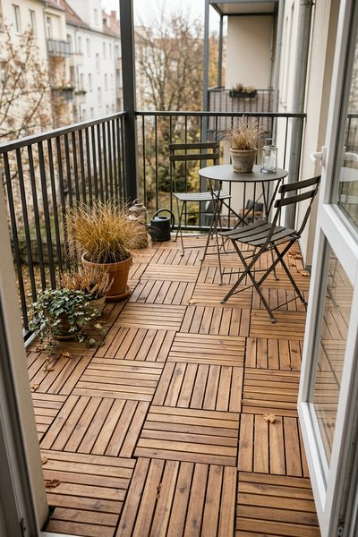
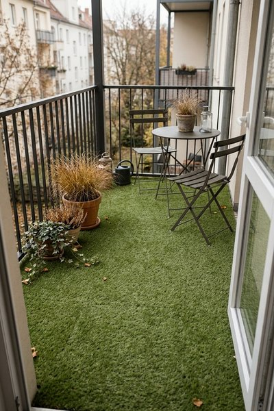
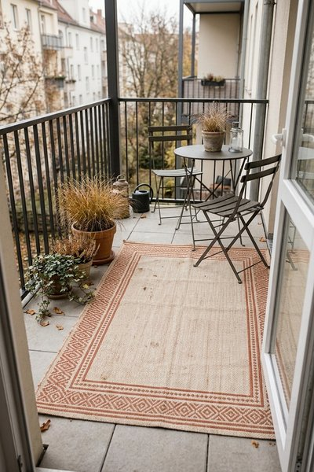

Balkonboden: Holzfliesen, Kunstrasen oder Teppich?
Derselbe Balkon, drei Böden. Der Boden ist die größte Fläche auf dem Balkon – und der schnellste Weg vom grauen Beton zu einem gemütlichen Platz. Alle drei Varianten lassen sich ohne Werkzeug verlegen und beim Auszug wieder mitnehmen.



1. Holzfliesen (Klickfliesen)
Fliesen aus Akazie oder anderem Hartholz, 30 × 30 cm, auf einem Kunststoffgitter, die einfach zusammengeklickt werden. Regenwasser läuft darunter ab.
Vorteile: warm und natürlich, sieht hochwertig aus, barfuß angenehm.
Nachteile: am teuersten, einmal im Jahr ölen, darunter sammelt sich Schmutz – ab und zu anheben und kehren.
ca. 20–40 € pro m²
2. Kunstrasen
Eine Kunstrasenmatte mit Drainagelöchern, mit dem Cuttermesser passend zugeschnitten.
Vorteile: günstig, weich, schnell verlegt, wirkt grün auch im Winter.
Nachteile: wird in der Sonne heiß, Laub und Krümel bleiben hängen, wirkt je nach Qualität künstlich.
ca. 8–20 € pro m²
3. Outdoor-Teppich
Ein Teppich aus Kunststoffgewebe, der den größten Teil des Bodens bedeckt.
Vorteile: am günstigsten, viele Muster, im Winter einfach einrollen.
Nachteile: der alte Boden bleibt am Rand sichtbar, saugt sich bei Regen voll und muss trocknen.
ca. 20–50 € pro Teppich
Vergleich auf einen Blick
| Holzfliesen | Kunstrasen | Outdoor-Teppich | |
|---|---|---|---|
| Kosten (ca. 4 m² Balkon) | 80–160 € | 30–80 € | 20–50 € |
| Haltbarkeit | 5–10 Jahre | 3–6 Jahre | 2–4 Jahre |
| Pflege | jährlich ölen | abkehren | ausschütteln, trocknen |
| Optik | warm, hochwertig | grün, frisch | viele Muster |
| Mietwohnung | ja, wieder entfernbar | ja | ja |
Richtwerte für Deutschland, Stand November 2026. Die Preise schwanken je nach Händler und Saison.
Welcher Boden passt zu dir?
Für länger und am schönsten: Holzfliesen.
Für Kinder und Barfußgefühl: Kunstrasen – im Schatten besser als in praller Sonne.
Günstig und flexibel: Outdoor-Teppich. Ideen dazu: Balkon-Makeover für 100 €.
Häufige Fragen
Darf ich auf dem Mietbalkon einen neuen Boden verlegen?
Lose verlegte Klickfliesen, Kunstrasen und Teppiche sind in der Regel erlaubt, weil nichts verklebt oder verschraubt wird. Der Abfluss muss frei bleiben.
Wie viele Holzfliesen brauche ich?
Pro Quadratmeter 9 Fliesen à 30 × 30 cm, plus etwa 10 % Reserve für Zuschnitte am Rand.